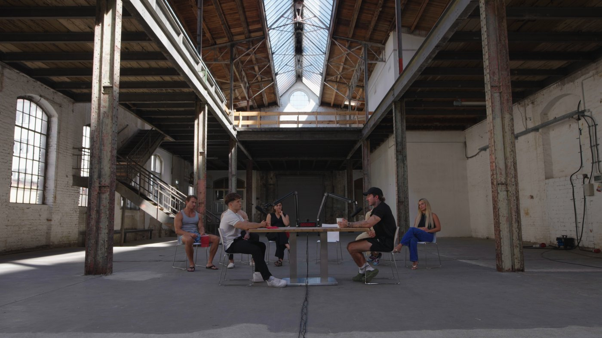
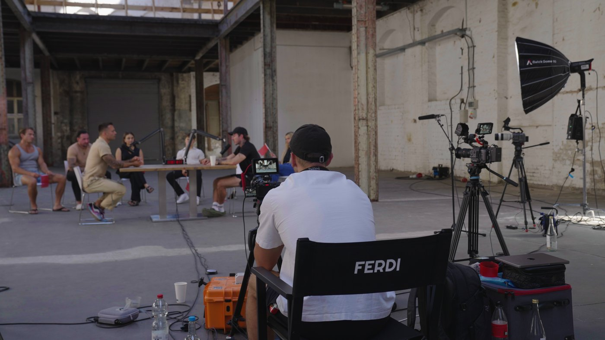
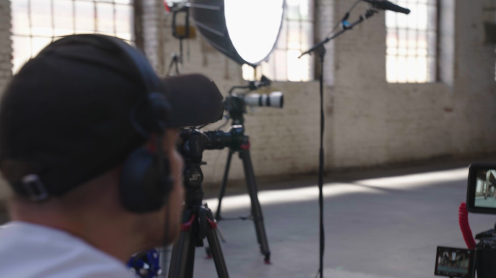
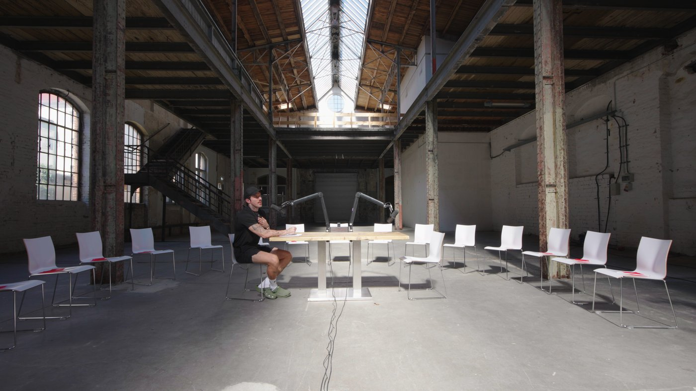
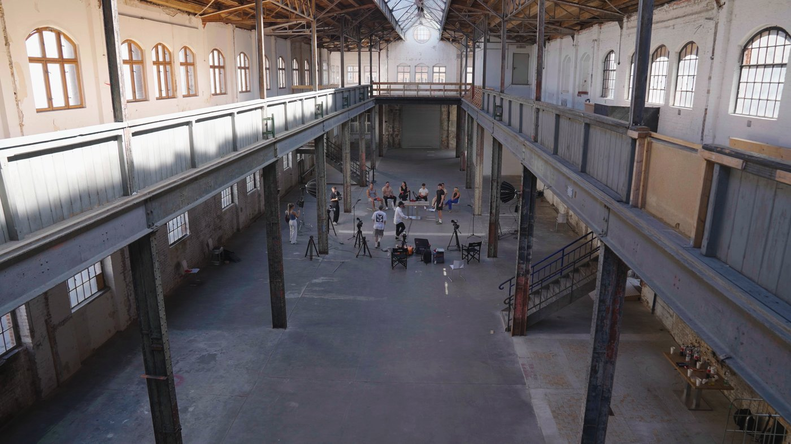

(Case 03) Client · Christian Wolf
The Circle
A discussion format for our client Christian Wolf: participants in a circle, a raw industrial hall as the set, 10 cameras recording every angle at once.

The brief
Put opposing views into one circle and let the conversation run — without stopping it for coverage, because every camera is already rolling.
What we did
- Multi-cam setup with 10 cameras: FX6, FX3 and A7S III bodies, plus a high angle
- Light and sound on location
- Rough cut, rules voice-over and intro
- Thumbnail




Planning something like this?
Start a project →